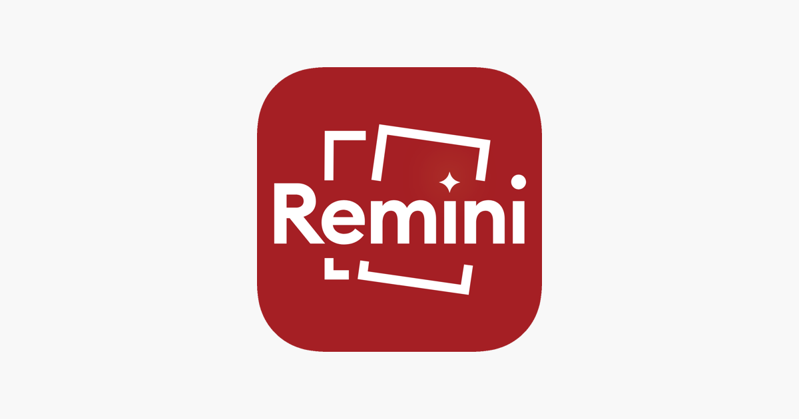

Have you ever stumbled upon an old photograph—perhaps a cherished family picture or a nostalgic snapshot from a long-ago vacation—that’s faded, blurry, or just plain sad? If so, you’re not alone. We’ve all been there. But what if I told you there’s an app that can bring those forgotten memories back to life? Enter Remini Pro.
Now, you might be thinking, “Another photo-editing app? Haven’t we seen them all?” Well, think again. Remini Pro isn’t your average app for slapping on a filter and calling it a day. It’s more like a magician, using advanced AI technology (don’t worry, we’ll keep this part light) to transform your old, damaged, or low-quality photos into crisp, clear, and stunning images. Let’s dive into the world of Remini Pro, where pixels get a second chance at life.
Remini Pro is a photo-enhancement app that uses advanced AI to bring old, blurry, and low-quality photos back to life. Whether it's an old family picture or a nostalgic snapshot from the past, this app can transform it into something crisp, clear, and worthy of display. It’s like sending your photos to a spa for a makeover!
Remini Pro works especially well with old photos—think black-and-white images of your grandparents’ wedding or your dad’s graduation day. With just a few taps, the app brings out details you never knew were there. In fact, it’s like the app knows your photos better than you do. Talk about impressive!
Using Remini Pro is incredibly simple, even for those who aren’t tech-savvy. Here’s how you can get started:
Head over to the app store on iOS or Android and download the Remini Pro app. While the basic version is free, upgrading to Pro unlocks extra features.
Select the photo you want to enhance from your gallery or snap a new one. The app works wonders on old and blurry pictures.
After selecting your photo, Remini Pro will do the hard work. In seconds, your photo will be enhanced, restored, and ready to be shared.
Once enhanced, you can save the photo to your device or share it with friends and family. It’s that easy!
While the basic version of Remini is free, Remini Pro comes with a subscription fee. But considering all the premium features, it’s well worth it—especially if you’ve got precious memories to restore. You can choose between monthly or yearly plans, and the best part is, there are no ads!
There’s something deeply satisfying about watching an old, blurry photo transform into a clear, detailed image. Whether you’re a professional photographer or someone with a shoebox full of grainy photos, Remini Pro is a game-changer. Before long, you’ll be enhancing every photo you can find!
Not only is the app easy to use, but it’s also highly addictive. Once you start enhancing one photo, you’ll find yourself digging through your photo albums (both physical and digital) to see what else you can improve. Before you know it, you’ll be the go-to photo-restoration expert among your friends and family.
While Remini Pro is impressive, it’s not magic (though it feels like it). If your photo was taken inside a potato, it might have some limits. But for most cases, Remini Pro APK will blow you away with the results.
So, go ahead—give your old photos a second chance. Whether you want to see what your parents looked like back in the day or finally get a clear image of your cat from that grainy flip phone shot in 2005, Remini Pro has your back.
And who knows? Maybe one day, you’ll enhance a photo so well that you’ll convince people you’ve traveled back in time to retake it. Just don’t try to claim it’s magic…unless, of course, you’re ready to fess up to using Remini Pro.